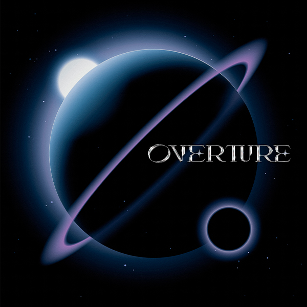

Album
Overture
Midnight Grand Orchestra, consisting of vocalist Hoshimachi Suisei and sound producer TAKU INOUE, has released the first package MINI ALBUM "Overture". "Never Ending Midnights", a mixture of musical-like godliness and profound feeling, "Allegro", which has a song title of "Allegro", a key item exclusively for Hoshimachi Suisei, is the 1st on April 13th. Space song "SOS" released as a single, disco tune "Rat A Tat" that makes you want to dance on the floor, midnight middle tune "Meteor shower" that coexists with sadness and fragility, pop tune that supports the journey of the universe Includes "Highway". The overwhelming singing ability of Hoshimachi Suisei and the addition of TAKU INOUE's conceptual sound make-up have created an EP that fully expands the world of Midnight Grand Orchestra.
- Midnight Grand Orchestra
- Taku Inoue & Hoshimachi Suisei
- Album Year's 2022
- Tokyo
| Title | Duration | Preview |
|---|---|---|
| Never Ending Midnights | 3:07 | |
| SOS | 3:42 | |
| Allegro | 3:27 | |
| Rat A Tat | 3:44 | |
| Tuning (Interlude) | 1:19 | |
| Ryuseigun | 4:40 | |
| Highway | 4:05 |